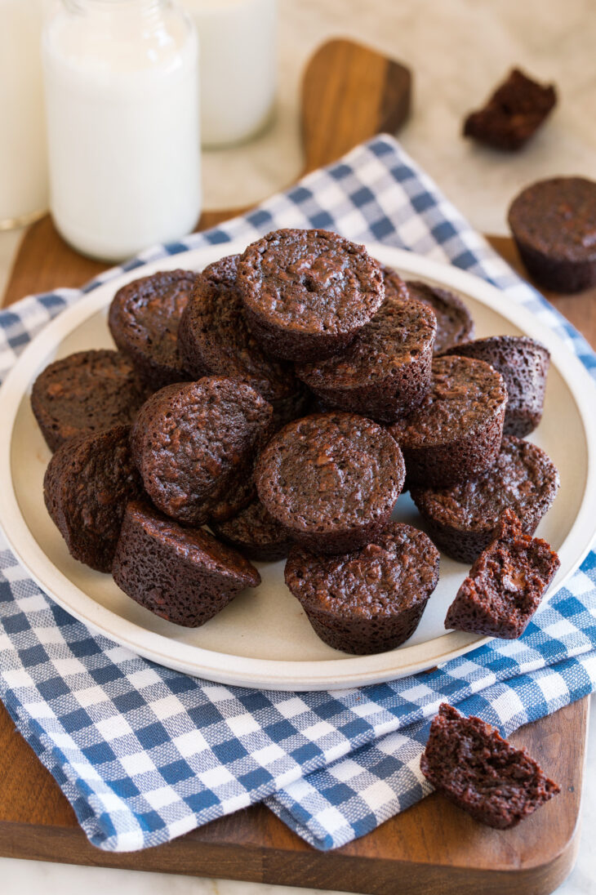

Brownie Bites

Description
Brownie Bites are a bite size version of the traditional, homemade fudgy brownies
we crave! They are perfectly chocolatey, deliciously buttery,
and make a great base for a mini swirl of luscious frosting.
Ingredients
- Unsalted Butter
- Granulated Sugar
- Salt
- Eggs
- Vanilla Extract
- All-purpose Flour
- Dutch Process Cocoa Powder
- Mini Semi Sweet Chocolate Chips
How to make Brownie Bites
- Preheat oven to 325 degrees.
- Spray a 24 cup mini muffin pan with non-stick cooking Spray
and dust with 2 tsp cocoa powder. Shake to coat evenly and set aside.
- Place butter in a large microwave safe mixing bowl. Heat butter until just melted in microwave.
- Whisk in sugar and salt. Then whisk in eggs and vanilla extract, blending well.
- Add flour and cocoa powder and stir mixture until combined, while scraping sides and bottom of bowl.
- Stir in chocolate chips
- Scoop batter out about 1.5 Tbsp at a time and drop into prepared muffin pan filling until nearly full.
- Bake in preheated oven until just set, about 15 to 17 minutes.
- Let cool in pan 15 minutes before transferring brownie bites to a wire rack to finish cooling. If desired, top with frosting.
Home
Chicken Fried Rice Recipe
Korean Beef Bowl Recipe